Tips
Files Structure
/HTML/css(Template CSS)/fonts(Font Faces, Font Awesome, etc..)-
/skinsdefault.css...(Create your own skin)
/img(All Images)/js(Template JS)/views(JS to run in specific pages. I.E: Home or Contact Us)/master(You don't need to include that folder in your project, it has only the Style Switcher functions)/php(PHP Helpers - I.E: Contact Us form.)/vendor(All external libs. We keep all of them in this folder to make updates easily.)/video(All Videos)
Javascript
It's possible to change the JS settings by extending the defaults from the template, that way is so much easier to update the theme changing only one JS file.
Here are a few samples on how to do that:
Changing Settings
1) Changing the "scroll to top" icon: (js/custom.js)
$.extend(theme.PluginScrollToTop.defaults, {
iconClass: 'fa fa-chevron-up'
});
2) Changing the "word rotate" default delay: (js/custom.js)
$.extend(theme.PluginWordRotate.defaults, {
delay: 3000
});
You can find all the defaults of the plugins and partials in the file js/theme.js as you can see here:
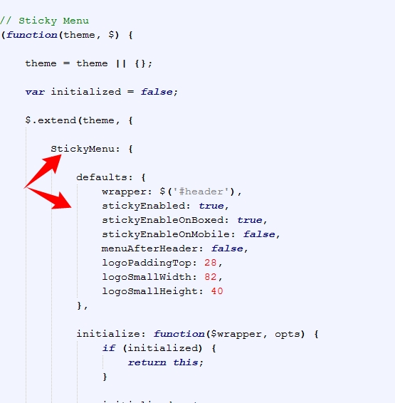
Changing Plugins Options
The template includes a very simple way to configure the elements that are initialized automatically, such as the sliders, you just need to put the settings in the "data-plugin-options" attribute, as you can see below:
<div class="slider" data-plugin-revolution-slider data-plugin-options='{"startheight": 700}'>
It works the same way for most of the plugins included in the template: owlCarousel, Word Rotate, Twitter Feed, etc...
If you want to disable the auto initialization you can just add a class "manual" or remove the data-plugin-* attribute:
<div class="slider manual" id="myRevolutionSlider">
So now you can initialize that using the standard JS mode:
$(document).ready(function() {
$('#myRevolutionSlider').revolution({
delay:9000,
startwidth:960,
...
...
});
});
Remove/Disable a Plugin or Partial
If you want to remove/disable a plugin or partial that has a "initialize" function completely, follow this example: (js/custom.js)
theme.PluginScrollToTop.initialize = function() {};
You can find all the available plugins and partials in the file js/theme.init.js as you can see here:
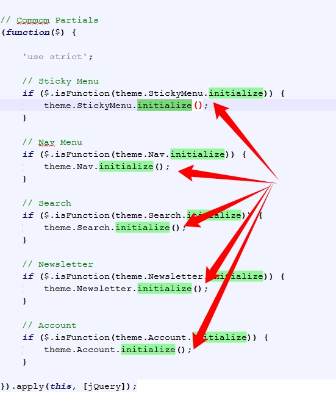
Manually Initializing a Plugin
Some of the plugins/elements are initialized automatically, if you want to disabled that and call the plugin via Javascript, follow these steps:FROM (HTML):
<div class="owl-carousel" data-plugin-options='{"items": 6, "singleItem": false, "autoPlay": true}'>
TO (HTML):
<div class="owl-carousel manual" id="owl-example">(Javascript):
$(document).ready(function() {
$("#owl-example").owlCarousel({
"items": 6,
"singleItem": false,
"autoPlay": true
});
});
HTML Structure
The template is based on Bootstrap 3 Framework - http://getbootstrap.com
Bootstrap includes a responsive, mobile first fluid grid system that appropriately scales up to 12 columns as the device or viewport size increases.
<div class="row"> <div class="col-md-12"> Level 1 column <div class="row"> <div class="col-md-6">Level 2</div> <div class="col-md-6">Level 2</div> </div> </div> </div>
If you need more information, please visit this site: http://getbootstrap.com/css/#grid
CSS Structure
The organization of the CSS is one of our priorities.
These are the CSS file we're using in the template:
theme.css- (The basic layout structure styles)theme-elements.css- (Elements such as sliders, boxes, titles, etc...)theme-shop.css- (Shop Pages styles)theme-blog.css(Blog Pages styles)theme-animate.css(CSS Animations)custom.css(Add all customizations into this file)ie.css(Internet Explorer fixes)
CSS Helper Classes
Text Helpers
| Class | Description |
|---|---|
| .text-xs | Change text font-size |
| .text-sm | Change text font-size |
| .text-md | Change text font-size |
| .text-lg | Change text font-size |
| .text-xl | Change text font-size |
| .text-primary | Changes text color to the primary color |
| .text-primary-inverse | Changes text color to the primary color inverse |
| .text-dark | Changes text color to dark version |
| .text-dark-inverse | Changes text color to dark version inverse |
| .text-weight-light | Change text weight |
| .text-weight-normal | Change text weight |
| .text-weight-semibold | Change text weight |
| .text-weight-bold | Change text weight |
| .text-uppercase | Uppercase text |
| .text-lowercase | Lowercase text |
| .text-capitalize | Capitalize text |
Spacements
| Class | Description |
|---|---|
| .m-none | Changes all margins to none |
| .m-auto | Changes margin to 0 auto |
| .m-xs | Changes all margins |
| .m-sm | Changes all margins |
| .m-md | Changes all margins |
| .m-lg | Changes all margins |
| .m-xl | Changes all margins |
| .m-xlg | Changes all margins |
| .mt-none | Changes margin-top to none |
| .mt-xs | Changes margin-top |
| .mt-sm | Changes margin-top |
| .mt-md | Changes margin-top |
| .mt-lg | Changes margin-top |
| .mt-xl | Changes margin-top |
| .mt-xlg | Changes margin-top |
| .mb-none | Changes margin-bottom to none |
| .mb-xs | Changes margin-bottom |
| .mb-sm | Changes margin-bottom |
| .mb-md | Changes margin-bottom |
| .mb-lg | Changes margin-bottom |
| .mb-xl | Changes margin-bottom |
| .mb-xlg | Changes margin-bottom |
| .mr-none | Changes margin-left to none |
| .ml-xs | Changes margin-left |
| .ml-sm | Changes margin-left |
| .ml-md | Changes margin-left |
| .ml-lg | Changes margin-left |
| .ml-xl | Changes margin-left |
| .ml-xlg | Changes margin-left |
| .mr-none | Changes margin-right to none |
| .mr-xs | Changes margin-right |
| .mr-sm | Changes margin-right |
| .mr-md | Changes margin-right |
| .mr-lg | Changes margin-right |
| .mr-xl | Changes margin-right |
| .mr-xlg | Changes margin-right |
| .p-none | Changes all paddings to none |
| .p-auto | Changes padding to 0 auto |
| .p-xs | Changes all paddings |
| .p-sm | Changes all paddings |
| .p-md | Changes all paddings |
| .p-lg | Changes all paddings |
| .p-xl | Changes all paddings |
| .p-xlg | Changes all paddings |
| .pt-none | Changes padding-top to none |
| .pt-xs | Changes padding-top |
| .pt-sm | Changes padding-top |
| .pt-md | Changes padding-top |
| .pt-lg | Changes padding-top |
| .pt-xl | Changes padding-top |
| .pt-xlg | Changes padding-top |
| .pb-none | Changes padding-bottom to none |
| .pb-xs | Changes padding-bottom |
| .pb-sm | Changes padding-bottom |
| .pb-md | Changes padding-bottom |
| .pb-lg | Changes padding-bottom |
| .pb-xl | Changes padding-bottom |
| .pb-xlg | Changes padding-bottom |
| .pr-none | Changes padding-left to none |
| .pl-xs | Changes padding-left |
| .pl-sm | Changes padding-left |
| .pl-md | Changes padding-left |
| .pl-lg | Changes padding-left |
| .pl-xl | Changes padding-left |
| .pl-xlg | Changes padding-left |
| .pr-none | Changes padding-right to none |
| .pr-xs | Changes padding-right |
| .pr-sm | Changes padding-right |
| .pr-md | Changes padding-right |
| .pr-lg | Changes padding-right |
| .pr-xl | Changes padding-right |
| .pr-xlg | Changes padding-right |
Others
| Class | Description |
|---|---|
| .ib | Changes display to inline-block and set vertical-align to top |
| .va-middle | Changes vertical-align to middle |
| .bg-primary | Changes background and text color to inverse color of background |
| .bg-secondary | Changes background and text color to inverse color of background |
| .bg-tertiary | Changes background and text color to inverse color of background |
| .bg-quartenary | Changes background and text color to inverse color of background |
| .bg-success | Changes background and text color to inverse color of background |
| .bg-warning | Changes background and text color to inverse color of background |
| .bg-danger | Changes background and text color to inverse color of background |
| .bg-info | Changes background and text color to inverse color of background |
| .bg-dark | Changes background and text color to inverse color of background |
Customization & Styles
Colors
The style switcher was made to support unlimited skin colors, for that we use Less (http://www.lesscss.org/) to process the CSS dinamically in the demo and show the color right away.
You don't need to use LESS in your project, after you done customizing your skin you may want to grab the generated code and save it in a file in the folder: /css/skins/(skin-name).css
Learn More: How to change the Skin
Layout Style (Normal/Boxed)
The template has two different layout modes, Wide and Boxed. The wide one is the default option, if you want to use the Boxed version, add the following class in the <html>:
<html class="boxed">
You can also customize the background color or image.
Background Color (Light/Dark)
The template has two different background colors, Light and Dark. The light one is the default option, if you want to use the Dark version, add the following class in the <html>:
<html class="dark">
Fonts
To change the embedded font, please take a look in the head part of the website and you will find this tag:
<link href="http://fonts.googleapis.com/css?family=Open+Sans:300,400,600,700,800|Shadows+Into+Light" rel="stylesheet" type="text/css">To change the font, first go to http://www.google.com/webfonts choose a font and use the generated code.
Skin
You can generate your own skin color:
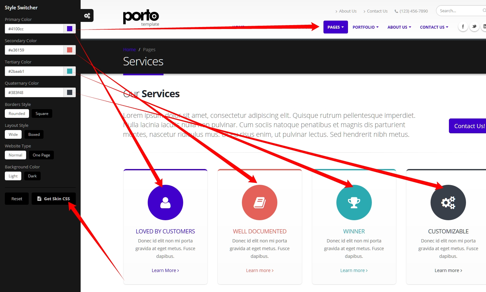
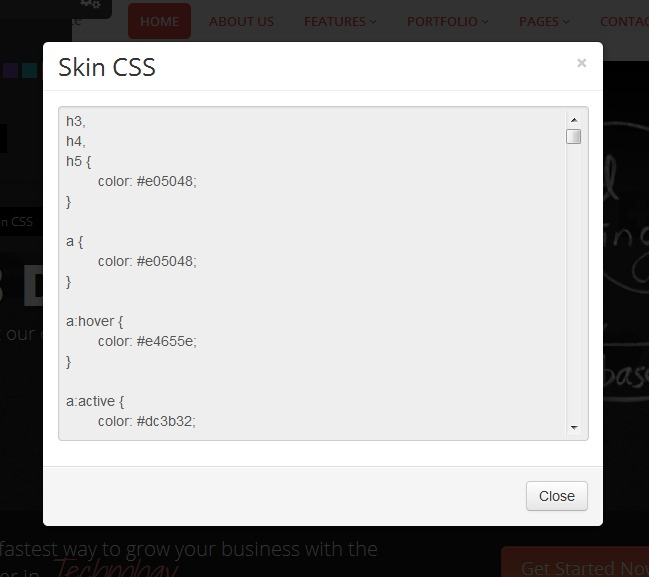
Copy that and save as a css skin file (css/skins/default.css)
RTL
To activate the RTL mode please follow the steps:
1) Add the "dir" attribute in the HTML tag:
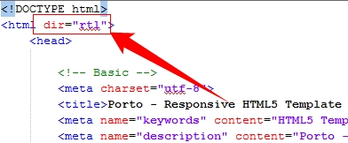
2) Add the Bootstrap RTL version after the default Bootstrap file in the HTML:
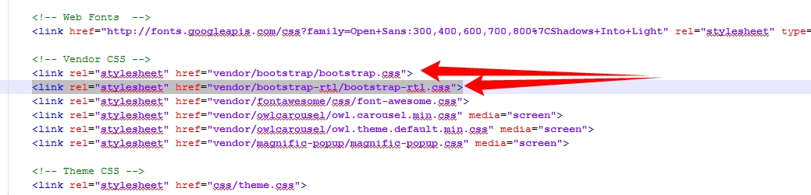
3) Copy all the files from the folder:
HTML/master/rtl/css to the default css folder HTML/css.
4) Add the "rtl-" prefix in the files:
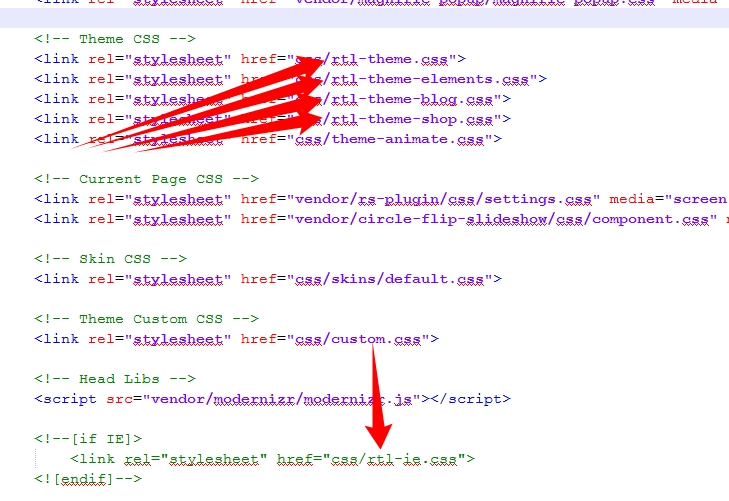
Icons
Font Awesome is a @font-face iconset that you can change size and color of the icons using CSS.
If you need more information, please visit this site: http://fontawesome.io/
<i class="fa fa-edit"></i> <i class="fa fa-search"></i> ...
Lightbox
The lightbox is driven by Magnific Popup script.
Here's an example of usage:
<a class="img-thumbnail lightbox" title="Open Lightbox" href="img/projects/project-4.jpg" data-plugin-options='{"type":"image"}'>
<img class="img-responsive" src="img/projects/project-4.jpg">
</a>
For more information check the documentation.
Video Background
The video background are driven by the Vide Plugin - https://github.com/VodkaBears/Vide
Here's an example of usage:
<section class="video" data-video-path="video/dark" data-plugin-video-background data-plugin-options='{"posterType": "jpg", "position": "50% 50%"}'>
Prepare your video in several formats like '.webm', '.mp4' for cross browser compatability, also add a poster with .jpg, .png or .gif extension and set in the attribute data-video-path.
Twitter Feed
1) Open up the HTML files and put your twitter username.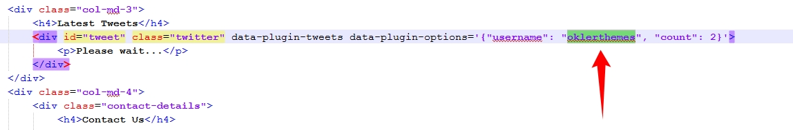
2) Go to: https://apps.twitter.com/
3) Click on "Create new APP":
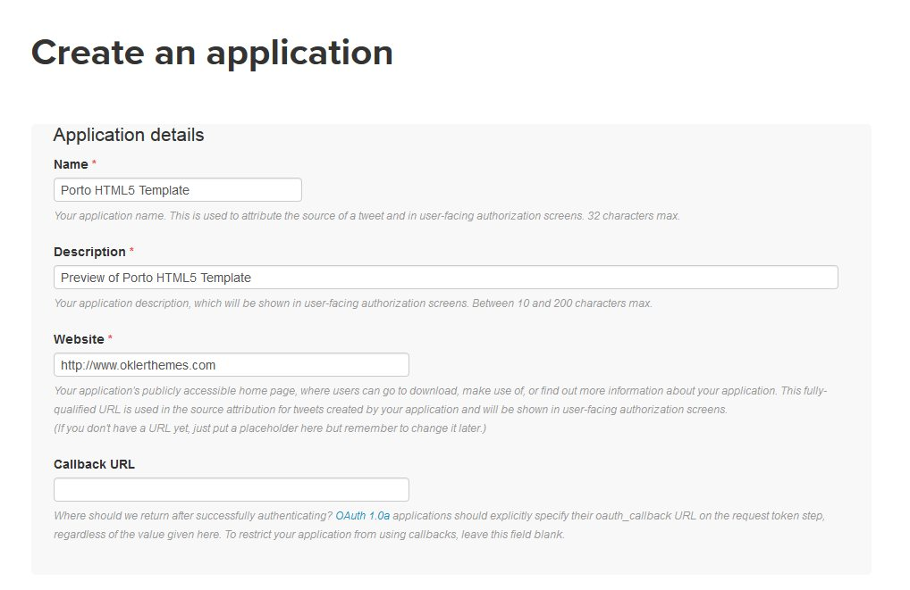
4) Enter the information about your website:
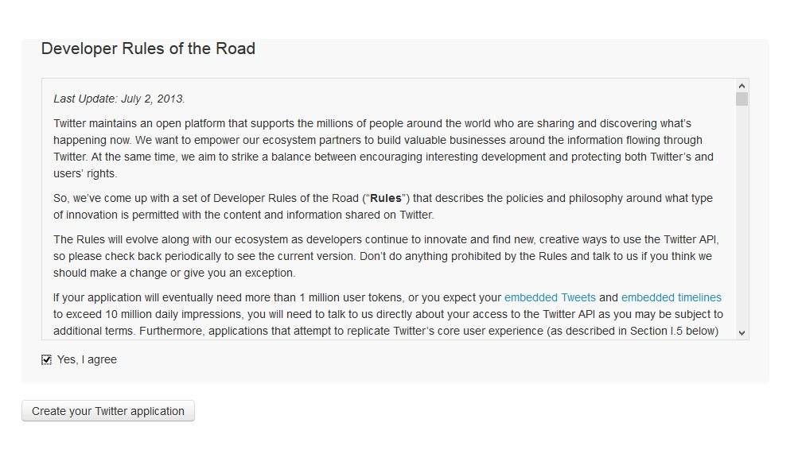
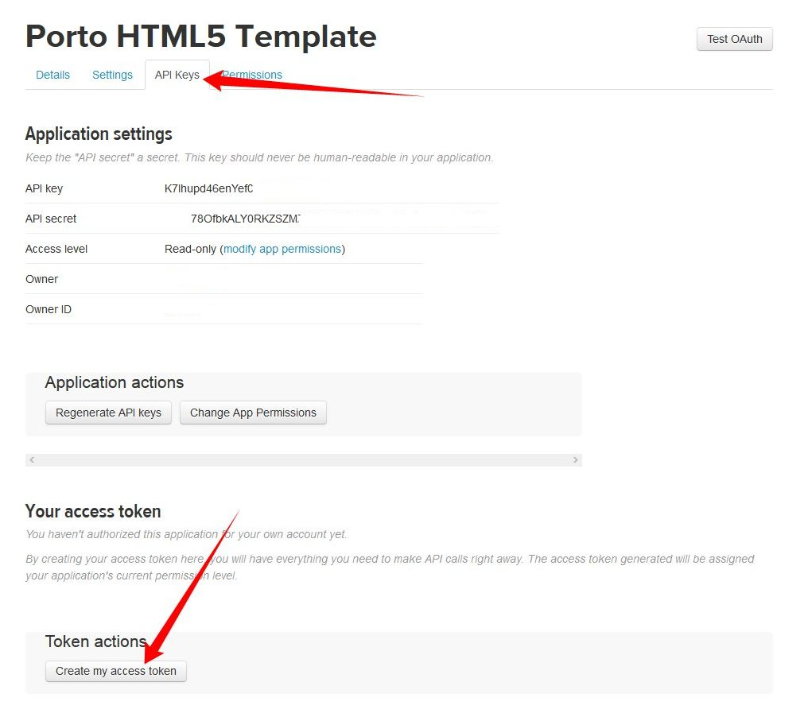
5) Click in the API Keys tab and in the button "Create my access token":
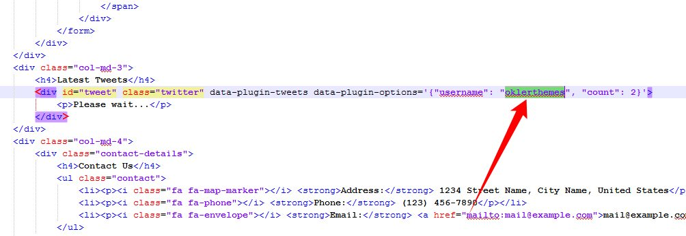 (Wait 1 minute and refresh the page)
6) Get the keys and put in the file: php/twitter-feed.php:
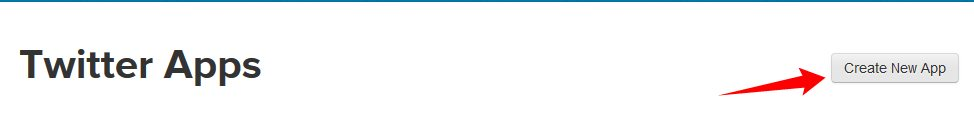
Effects
You can add some Animations / Transitions to the elements which fires when an element scrolls into view, it's pretty simple to use and you can add it in any element.
Usage:
<div data-appear-animation="bounceIn" data-appear-animation-delay="200"> ... </div>
Heads up: The Attribute data-appear-animation-delay is Optional and is set in Miliseconds.
The animation can be set to:
- flash
- shake
- bounce
- tada
- swing
- wobble
- wiggle
- pulse
- fadeIn
- fadeInUp
- fadeInDown
- fadeInLeft
- fadeInRight
- fadeInUpBig
- fadeInDownBig
- fadeInLeftBig
- fadeInRightBig
- bounceIn
- bounceInUp
- bounceInDown
- bounceInLeft
- bounceInRight
- rotateIn
- rotateInUpLeft
- rotateInDownLeft
- rotateInUpRight
- rotateInDownRight
Admin Extension
View Topic: How to integrate Porto Admin Extension on PortoSource & Credits
-
Images:
- Photodune: http://photodune.net/
- Subtle Patterns: http://subtlepatterns.com/
-
Fonts:
- Google Fonts - http://www.google.com/webfonts
- Icons Font-face - http://fontawesome.io/
-
Scripts:
- jQuery - http://www.jquery.com/
- Bootstrap 3 - http://getbootstrap.com/
- Revolution Slider - http://codecanyon.net/item/slider-revolution-responsive-jquery-plugin/2580848
- Nivo Slider - http://dev7studios.com/nivo-slider/
- Isotope Jquery plugin - http://isotope.metafizzy.co
- Modernizr - http://modernizr.com/
- jQuery gMap 2 - Google Maps API V3 - http://labs.mario.ec/jquery-gmap/
- Owl Carousel - http://www.owlgraphic.com/owlcarousel2/
- Respond.js - https://github.com/scottjehl/Respond
- Twitter JS Api - http://code.google.com/p/twitterjs/
- Jquery Flickr Plugin - http://www.newmediacampaigns.com/page/jquery-flickr-plugin
- Jquery Easing - http://gsgd.co.uk/sandbox/jquery/easing/
- Magnific Popup - http://dimsemenov.com/plugins/magnific-popup/
- Jquery Validate - http://bassistance.de/jquery-plugins/jquery-plugin-validation/
- Jquery Cookie - https://github.com/carhartl/jquery-cookie
- Stellar.JS- http://markdalgleish.com/projects/stellar.js/
- Jquery Appear - https://github.com/bas2k/jquery.appear/
- Vide - https://github.com/VodkaBears/Vide